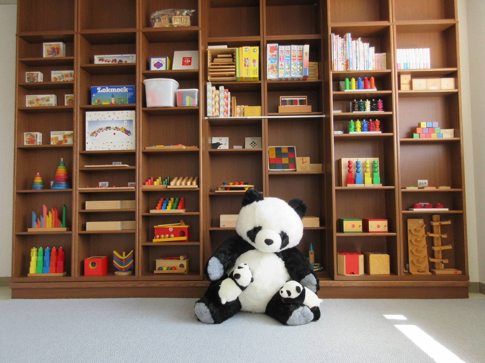
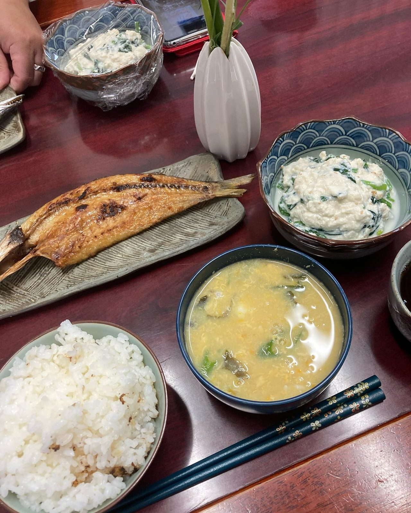
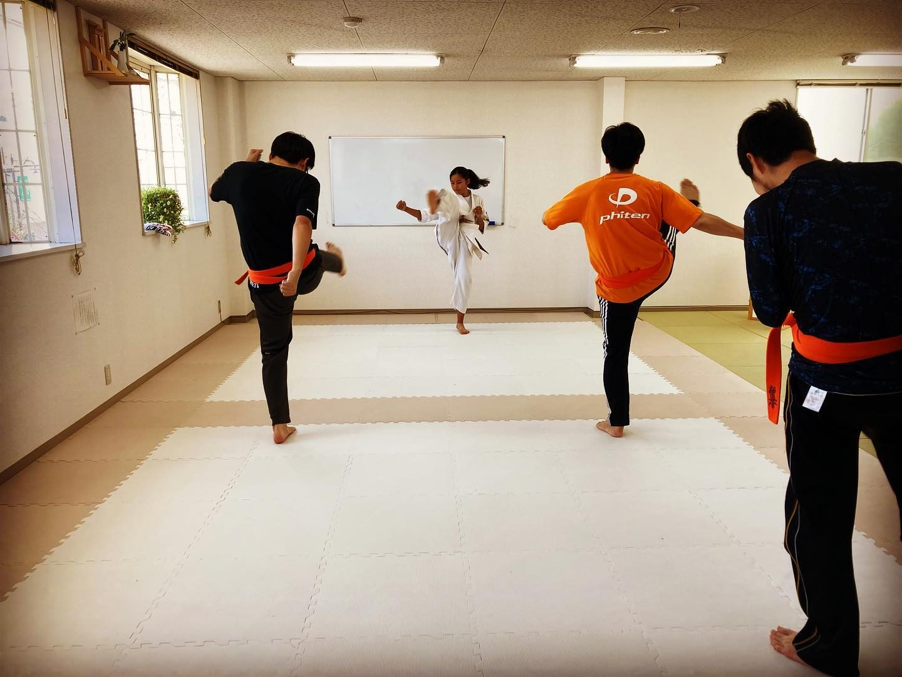
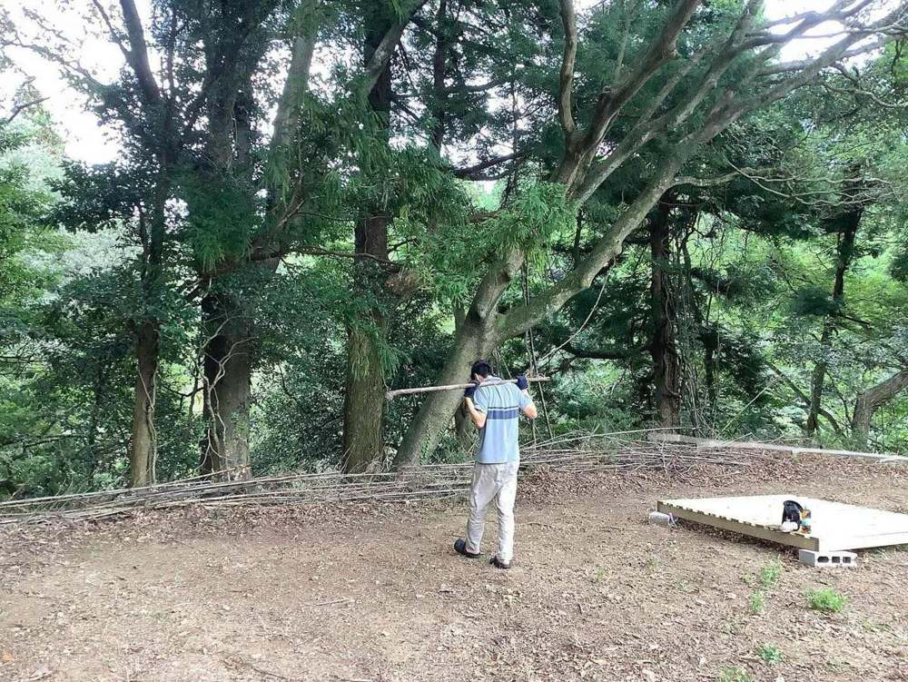
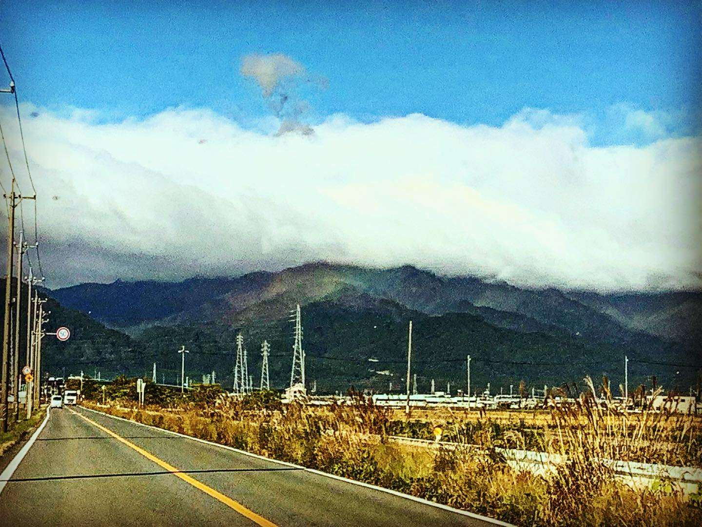
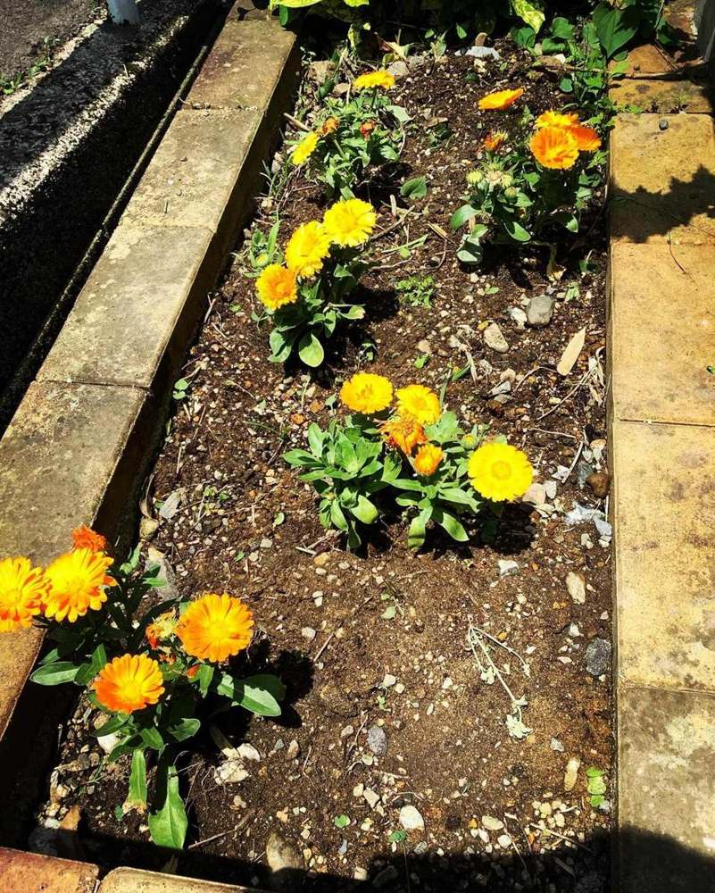

案01 朝のひかり 朝日の入るおもちゃ部屋を画面いっぱいに使い、言葉は左下の暗い面に短く置く 案02
見開き絵本
絵と文を左右に分け、見開きごとに写真と文章が入れ替わる
案02
見開き絵本
絵と文を左右に分け、見開きごとに写真と文章が入れ替わる
 案03
座敷の縦書き
藍の壁に縦書きを落とし、写真は横一文字の開口部にする
案03
座敷の縦書き
藍の壁に縦書きを落とし、写真は横一文字の開口部にする
 案04
社会面
巨大な見出しと段組み。仕切り線は引かない、紙面だけの新聞
案04
社会面
巨大な見出しと段組み。仕切り線は引かない、紙面だけの新聞
 案05
一枚のポスター
行事の写真に名前を重ね、電話番号は下端で手にとって切れる
案05
一枚のポスター
行事の写真に名前を重ね、電話番号は下端で手にとって切れる
 案06
余白の手紙
画面に一文だけ。写真は遠くに、小さく、遅れて現れる
案07
スケッチ帖
線のない紙に、テープで留めた写真と、鉛筆で書いたような字
案06
余白の手紙
画面に一文だけ。写真は遠くに、小さく、遅れて現れる
案07
スケッチ帖
線のない紙に、テープで留めた写真と、鉛筆で書いたような字

案08 切り紙 不規則な色面を重ね、写真ははさみで抜いた形の中に置く
案09 暗室 黒い部屋に、白い余白を大きく取った写真だけを置く
案10 絵巻 一日を横方向の絵巻にし、狭い画面では縦にほどく
案11
立面図
建物の写真を立面に見立て、寸法の線は一本だけ添える
 案15
山城、十二分
方向幕のような黄と黒で、駅から歩く時間を大きく示す
案16
木のつみき
角度のばらついた木片の上に、短い文を載せる
案17
藍の暖簾
のれんを二つに割り、その奥に二階の入口がある
案18
図鑑の頁
一枚の野外写真のまわりに、標本ラベルのような短い注を置く
案15
山城、十二分
方向幕のような黄と黒で、駅から歩く時間を大きく示す
案16
木のつみき
角度のばらついた木片の上に、短い文を載せる
案17
藍の暖簾
のれんを二つに割り、その奥に二階の入口がある
案18
図鑑の頁
一枚の野外写真のまわりに、標本ラベルのような短い注を置く

案22 季節の便り 花と山道の写真を、手紙の紙に挟んで少し傾ける
案24
掌の物語
一章が画面ひとつ。次の言葉は、親指の届く下のほうに置く

案26 一輪の間 白い部屋の中央に花を一輪。説明は端に細い縦の文
案28
長い影
夕方の光。文字は写真の下に伸びる影の中へ沈める
案29
ことばの川
文章が丸い写真を石のように避けて、川の水みたいに回りこむ
案30
星から二階へ
夜の星から始まり、明るいおもちゃ部屋と二階のドアで朝になる